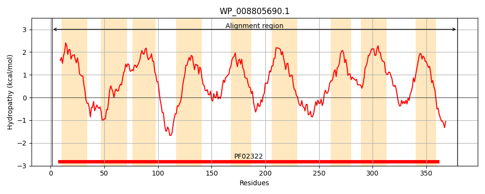
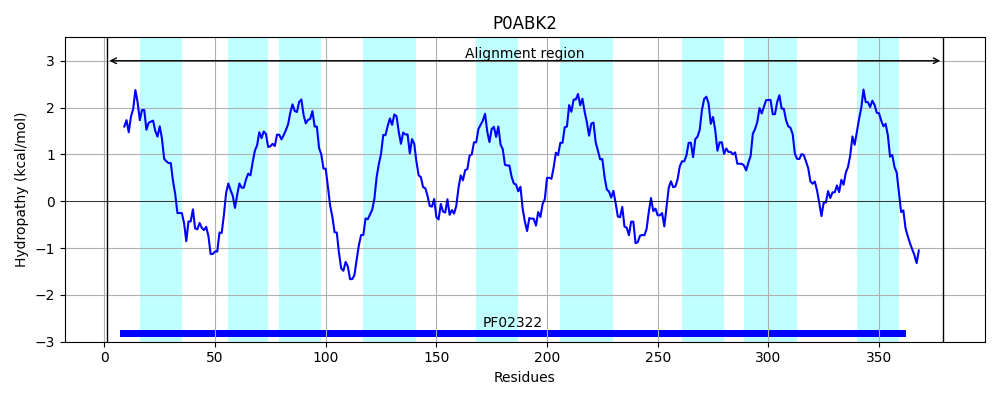
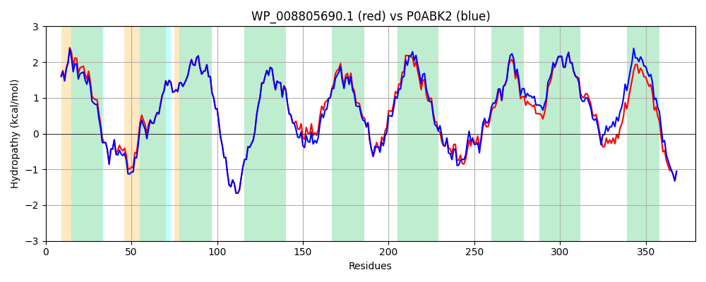

Hit Accession: P0ABK2
Hit TCID: 3.D.4.3.2
Hit Description: gnl|BL_ORD_ID|8711 gnl|TC-DB|P0ABK2|3.D.4.3.2 Cytochrome d ubiquinol oxidase subunit 2 OS=Escherichia coli (strain K12) GN=cydB PE=1 SV=1
Mach Len: 379
e:0.000000
Query TMS Count : 9
Hit TMS Count: 9
TMS-Overlap Score: 9.500000
Predicted Substrates:None
BLAST Alignment:
Score: 1825 , Bit scores: 707 bits, E-value: 0.0e+00, Alignment length: 379, Percentage identity: 89
Query: 1 MIDYEVLRFIWWLLIGILLIGFAVADGFDMGVGMLTRFLGRNDTERRIMINAIAPHWDGNQVWLITAGGALFAAWPMVYAAAFSGFYVAMILVLASLFFRPVGFDYRSKIEDTRWRNMWDWGIFIGSFVPPLVIGVAFGNLLQGVPFHVDEYLRLFYTGNFFQLLNPFGLLAGIVSVAMILTQGATYLQMRTVGELHLRTRTVSTVAALVTLVCFALAGVWVYYGIDGYVVKSVMDHSGPSNPLTKEVVREAGAWMVNFNNMPALWAVPALGVVLPLLTVVSTKADKGAWAFLFSSLTLACIILTAGIAMFPFIMPSSTMLNASLTMWDATSSQRTLNLMTYVAIVFVPIILAYTSWCYWKMFGRITREDIEKNTHSLY 379
MIDYEVLRFIWWLL+G+LLIGFAV DGFDMGVGMLTRFLGRNDTERRIMIN+IAPHWDGNQVWLITAGGALFAAWPMVYAAAFSGFYVAMILVLASLFFRPVGFDYRSKIE+TRWRNMWDWGIFIGSFVPPLVIGVAFGNLLQGVPF+VDEYLRL+YTGNFFQLLNPFGLLAG+VSV MI+TQGATYLQMRTVGELHLRTR + VAALVTLVCFALAGVWV YGIDGYVVKS MDH SNPL KEVVREAGAW+VNFNN P LWA+PALGVVLPLLT+++ + DK AWAF+FSSLTLACIILTAGIAMFPF+MPSSTM+NASLTMWDATSSQ TLN+MT+VA+V VPIIL YT+WCYWKMFGRIT+EDIE+NTHSLY
Sbjct: 1 MIDYEVLRFIWWLLVGVLLIGFAVTDGFDMGVGMLTRFLGRNDTERRIMINSIAPHWDGNQVWLITAGGALFAAWPMVYAAAFSGFYVAMILVLASLFFRPVGFDYRSKIEETRWRNMWDWGIFIGSFVPPLVIGVAFGNLLQGVPFNVDEYLRLYYTGNFFQLLNPFGLLAGVVSVGMIITQGATYLQMRTVGELHLRTRATAQVAALVTLVCFALAGVWVMYGIDGYVVKSTMDHYAASNPLNKEVVREAGAWLVNFNNTPILWAIPALGVVLPLLTILTARMDKAAWAFVFSSLTLACIILTAGIAMFPFVMPSSTMMNASLTMWDATSSQLTLNVMTWVAVVLVPIILLYTAWCYWKMFGRITKEDIERNTHSLY 379 | Protein Hydropathy Plots: |
|---|
|  |  |
Pairwise Alignment-Hydropathy Plot:
|
|---|
|  |